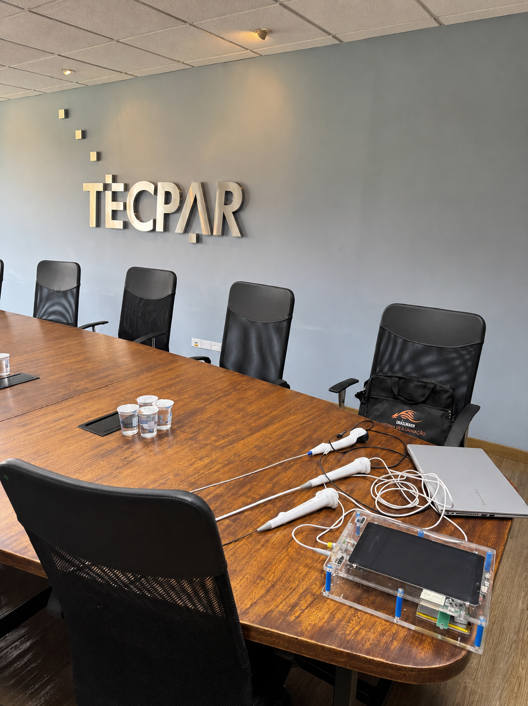

Projetos
Pesquisa aplicada, arquitetura, prototipagem e integração para transformar necessidades reais em sistemas tecnológicos verificáveis.

Projeto / 001Em desenvolvimento
Tecnologia médica / MedTech
Nexus V
Uma base universal. Sondas por especialidade. Um fluxo clínico conectado.
Plataforma modular que concentra eletrônica, energia e conectividade em uma base comum e permite ampliar a operação com sondas dedicadas a diferentes especialidades.
Conheça o projeto ↗Portfólio de desenvolvimento tecnológicoSirius / 2026